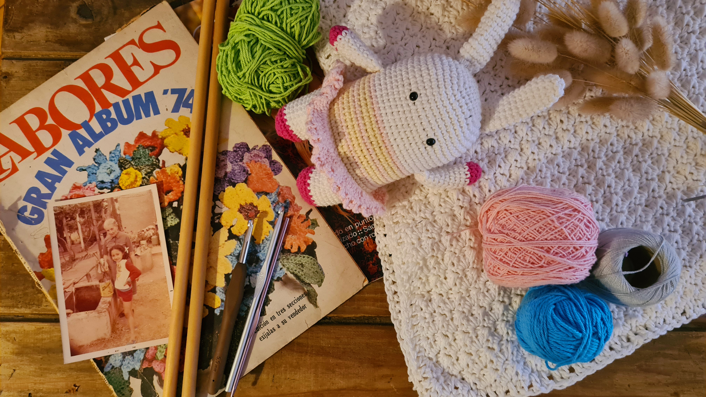

Como empezo este Proyecto
“Esta historia comienza hace muchos años.
Una de mis abuelas era rusa, no sabía hablar español, apenas balbuceaba algunas palabras. La otra, nunca supe bien su pasado, pero hablaba guaraní cuando se enojaba o trataba de contar alguna historia de familia, pensando, cada tanto, como traducir al castellano alguna de las leyendas aprendidas en su infancia. Ambas habían nacido en mundos muy diferentes, pero en épocas en que las mujeres tenían como ocupación aprender desde pequeñas coser, bordar, tejer … y más en las familias humildes, eran las encargadas de proveer la ropa de todos los integrantes.
Ambas eran mágicas, transformaban unas hebras de alguna lana encontrada por ahí, en hermosos abrigos. Tenían el arte de transformar, lo que había sido un pantalón, pasaba a ser con el tiempo en unas bermudas, shorts, y cuando ya no había forma de zurcir, se cortaba en tiras y pasaba a ser una bolsa de mandados.
Mi madre no dejó de seguir con la tradición. Es así que siempre estuve desde muy chica rodeada de telas, hilos lanas, agujas y cualquier cosa que pudiera ser transformada. De esa manera aprendí, que todo aquel tiempo que transcurría con cualquiera de ellas, no era tiempo perdido, ni entretenimiento, era aprendizaje, amor, y por sobre todas las cosas magia, el arte de combinar colores, que cada uno tiene un significado para cada ocasión.
Quizás muchos se pregunten el porqué de llevar algo rojo para la buena suerte, o violeta para la buena energía, y para quien solo lo hace pensando en modas, les advierto que no es así. Es un arte milenario, que cada cultura supo dar sur formas y usos.
Yo aprendí de todo un poco, y de cada una de ellas atesoré cada técnica, en donde una aguja de tejer o de coser, se transformaba en varita mágica en un segundo.
En ésta página, trataré de hacerles el honor a todas ellas.
Que empiece la aventura.”

Aca te contamos un poco lo que nos diferencia de la competencia.
| Materia Prima |
Metodo de confección |
Garantia |
Cuidado y Limpieza |
| Utilizamos Lanas e Hilos hipoalergenicos |
Cada producto se realiza a mano y son 100% personalizables |
Contas con una garantia de 6 meses |
Todos nuestros articulos se pueden lavar en lavarropas con agua fria |